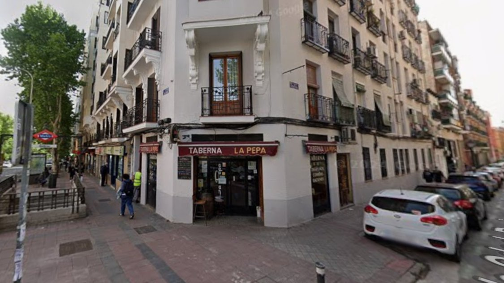
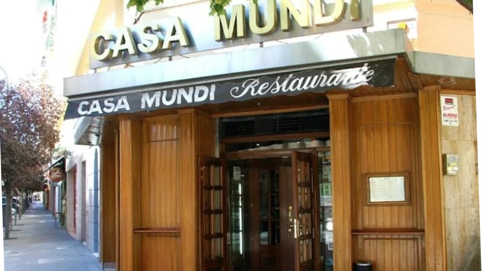
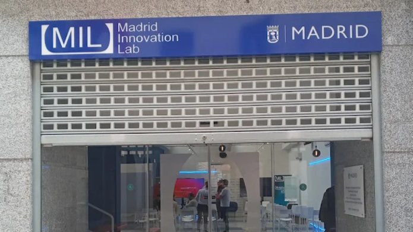
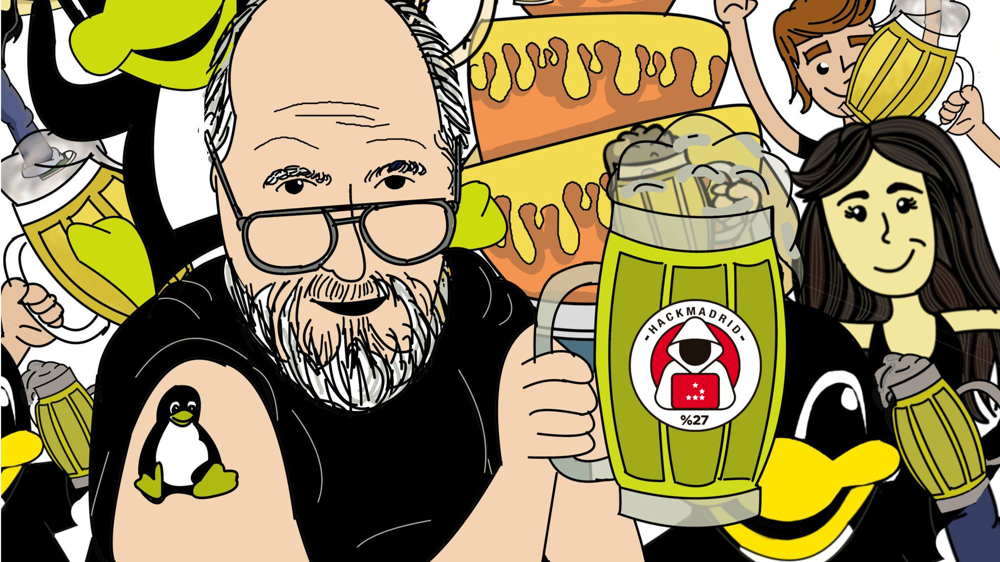

Jakeando Kañas en La Taberna La Pepa
📍 Taberna LA PEPA, Paseo de las Delicias 60, Madrid
Encuentro mensual con lockpicking, charlas transgresoras y anuncios sobre WorldParty2k26. Ambiente relajado, conocimiento compartido.
VER EN MEETUPHackMadrid organiza actividades orientadas a estimular el conocimiento técnico y sus implicaciones en la vida diaria. No solo adquirimos habilidades técnicas — consideramos también los aspectos éticos, sociales, económicos y culturales de cualquier tecnología.
Nuestra comunidad permite a sus miembros experimentar y aprender colaborando entre ellos. La forma educativa más eficiente es permitir que todos aporten y tomen conocimiento de la comunidad. No existe dualidad entre enseñar y aprender — ambas son partes de un todo.

📍 Taberna LA PEPA, Paseo de las Delicias 60, Madrid
Encuentro mensual con lockpicking, charlas transgresoras y anuncios sobre WorldParty2k26. Ambiente relajado, conocimiento compartido.
VER EN MEETUP📍 Madrid Innovation Lab, C. Bravo Murillo 39, Madrid
Rafael Hernampérez presentó los componentes arquitectónicos para plataformas de agentes IA, cubriendo diseño de sistemas de inteligencia autónoma.
VER EN MEETUP
📍 Casa Mundi, Calle Donoso Cortés 14, Madrid
Meetup social cerca del Madrid Innovation Lab para explorar nuevos espacios de encuentro mientras se habla de tecnología y cultura hacker.
VER EN MEETUP📍 Taberna LA PEPA, Paseo de las Delicias 60, Madrid
Encuentro mensual de la comunidad para hacer networking, discutir temas hacker y participar en actividades manuales con cerraduras y hardware.
VER EN MEETUP
📍 Madrid Innovation Lab, C. Bravo Murillo 39, Madrid
Fco. Javier Rodríguez presentó programación de agentes IA: selección de modelos, diseño de instrucciones y aplicaciones prácticas sin dependencias de frameworks.
VER EN MEETUP📍 La Casa Encendida, Ronda de Valencia 2, Madrid
Encuentro informal en el espacio cultural gratuito con terraza, fomentando el intercambio de conocimiento entre miembros de la comunidad hacker.
VER EN MEETUP
📍 EL LOCO, Plaza de Pedro Zerolo 9, Madrid
Encuentro especial con demostración de lockpicking, hardware, sorteo de regalos de HackBCN y el mantra de siempre: "el conocimiento nos hace libres".
VER EN MEETUP📍 Madrid
Conferencia interdisciplinar explorando el diseño de plataformas de agentes IA, el pensamiento crítico en tecnología y la innovación en hardware abierto. Sorteo de libros incluido.
VER EN MEETUP
📍 EL LOCO, Plaza de Pedro Zerolo 9, Madrid
Encuentro regular con buen rollo, lockpicking, compartición de hardware y debates sobre cultura hacker en el ambiente relajado de una sala de billar.
VER EN MEETUP
📍 Havana Blues, Paseo de Sta. María de la Cabeza 56, Madrid
Meetup mensual con intercambio de conocimiento, brainstorming de proyectos y networking informal entre entusiastas de la tecnología y la seguridad.
VER EN MEETUPLos talleres son una actividad educativa permanente y regular. Participar permite adquirir conocimientos y experiencia práctica de forma activa y creativa.
Impartimos talleres mensuales sobre redes, ingeniería inversa, exploits, auditorías, algoritmos de ataque y defensa, privacidad, anonimato y seguridad. Difundimos el uso de TOR, VPN, y sistemas operativos como Tails, Parrot, Kali, Kodachi y Qubes OS.
Las charlas son parte fundamental de nuestra comunidad. Miembros de HackMadrid y colaboradores externos comparten investigaciones, experiencias y conocimientos sobre cultura hacking, seguridad informática, privacidad digital y tecnologías emergentes.
Desde presentaciones técnicas hasta debates sobre ética y sociedad digital — nuestras charlas abarcan todo el espectro de temas relevantes para la comunidad hacker.
El CTF puede ser individual o por equipos. El objetivo: obtener la habilidad necesaria para hackear sistemas con distintos niveles de dificultad. Las pruebas pueden ser de criptografía, ingeniería inversa, explotación web, forense y más.
Organizamos varios CTF anuales presenciales y online, aspirando a que sean validados por el INCIBE para el torneo nacional. Nuestro equipo flagHunters representa a HackMadrid en torneos nacionales e internacionales.
El WorldParty es el evento anual de la red internacional Por Ciento 27 (%27), organizado conjuntamente por HackMadrid, HackMiami, HackBarcelona, Hack The Bay, PacificHackers y HackingSevilla.
Octubre 2023 — Edición presencial con presentaciones sobre threat modeling por profesionales de Red Hat.
Octubre 2021 — Online. Cuatro conferencias en paralelo con las 6 comunidades de la red %27.
2020 — Primera edición 100% online, manteniendo la comunidad activa durante el confinamiento.
2018 — Primera edición del evento anual, coincidiendo con la fundación de HackMadrid%27.
Formaciones sobre temas del sector: desde cursos introductorios hasta especializaciones en pentesting, OSINT, malware analysis, criptografía aplicada y más. Los miembros de HackMadrid impulsan la participación en conferencias y cursos para hacer crecer la comunidad de forma exponencial.